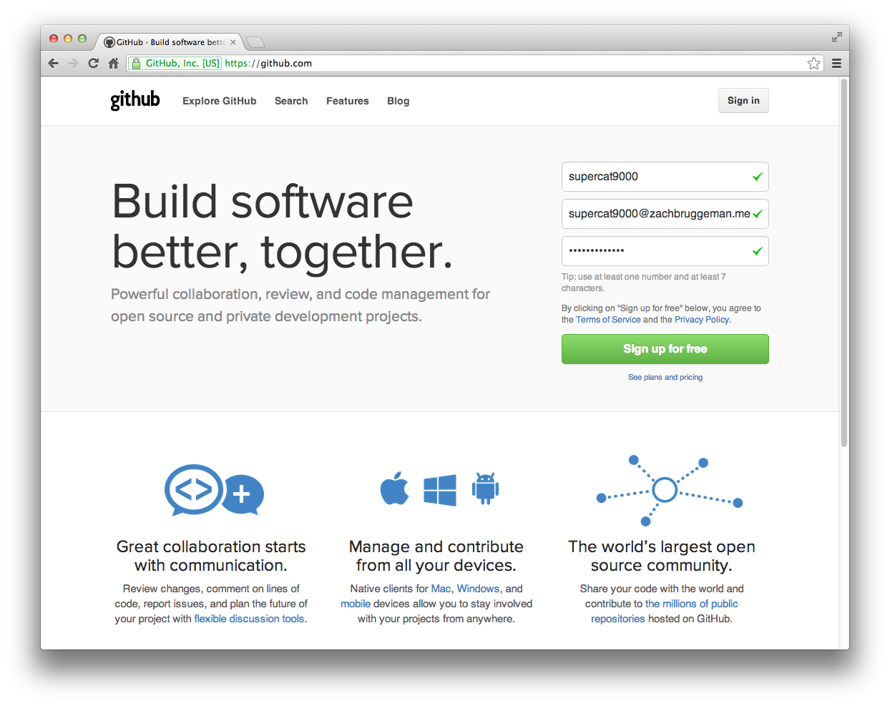

If you're a cat, you probably haven't heard of GitHub. Maybe your human companion has, but they don't really know how to explain it to you. (Which, as a cat, is extremely frustrating.) GitHub is a website that allows content creators, whether it be via programming, blogging, or issue-reporting, to collaborate together and to learn from each other. It's powered by a "distributed version control system" called git. A "distributed version control system" sounds pretty complicated, but it really isn't. What it really means is that lets you, a cat, manage all of the stuff you have made (like maybe some JavaScript?) in one place, and be able to go back in time to see what you did before. It also lets other cats (or maybe humans) see what you've done, and help you out with it. This guide will get you introduced to the world of GitHub through the adventures of беда the Super-Cat, also known as supercat9000, and it might even help your poor, misinformed human companion as well!
The best way to get started with GitHub is to create a GitHub account!
That was easy. You're now logged into your GitHub account, where you can do anything!
Back to topBefore you tackle the code-y parts of GitHub, a great way to start is to find others' code. One way to find lots of cool projects is by checking out the Explore page. The projects featured here are all top-notch, so see what interests you! (Probably the shiniest ones.) You can also follow people, to see all of their activity. (Maybe you want to follow this sharp fellow?) Finally, once you find a project you like, you can "star" it, which makes code-writers feel really awesome about themselves. It's that same feeling you might get when a new can of tuna is opened. Slightly less fishy-smelling, though.
Back to topThis guide is written by Zachary Bruggeman. You can see his dapper site here, with links to his Twitter, GitHub, and email. You can also make this guide way better on (of course) GitHub. Thank you for reading!
Back to top